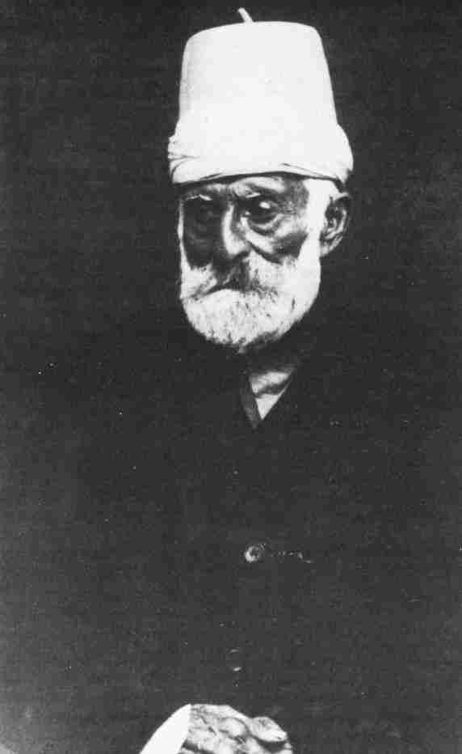
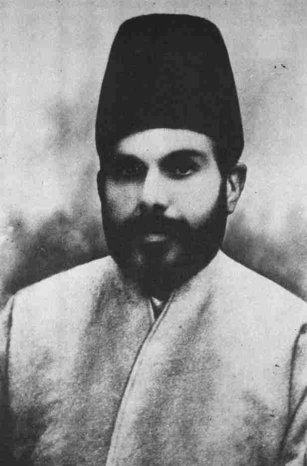

Kitáb-i-Aqdas. 5. The Covenant of Bahá'u'lláhIn several passages in the Kitáb-i-Aqdas Bahá'u'lláh prepared His followers for the time when He would depart from this world and, in His own words, ascend to His 'other dominions, whereon the eyes of the people of names have never fallen'.1 In two of these passages there is a clear indication that after Him, the faithful must turn to the Centre of His Covenant:
When the Mystic Dove will have winged its flight from its Sanctuary of Praise and sought its far-off goal, its hidden habitation, refer ye whatsoever ye understand not in the Book to Him Who hath branched from this mighty Stock.2And again:
When the ocean of My presence hath ebbed and the Book of My Revelation is ended, turn your faces toward Him Whom God hath purposed, Who hath branched from this Ancient Root.3Although Bahá'u'lláh did not explicitly identify the Centre of His Covenant in either of these passages in the Kitáb-i-Aqdas, there was no doubt in the minds of the believers that Bahá'u'lláh was referring to no other person than 'Abdu'l-Bahá. Bahá'u'lláh made this appointment clear when He quoted the above verse in His Will and Testament known as the Book of His Covenant, and stated that it referred to the Most Great Branch ('Abdu'l-Bahá).*
|
* The Covenant of Bahá'u'lláh and its Centre, 'Abdu'l-Bahá, will be further discussed in the next volume.
1. Quoted by Shoghi Effendi, God Passes By, p. 221. 2. Synopsis, p. 27. 3. ibid. p. 24.
The Kitáb-i-Aqdas ["When the Mystic Dove..."] The Kitáb-i-Aqdas, ¶174 ["When the ocean..."] The Kitáb-i-Aqdas, ¶121 [On the eve of Saturday...] The Revelation of Bahá'u'lláh vol. 4 p. 417 |
|
|
In another passage in the Kitáb-i-Aqdas concerning his ascension,* Bahá'u'lláh assures His loved ones of His unfailing support and confirmation in these words:
Let not your hearts be perturbed, O people, when the glory of My Presence is withdrawn, and the ocean of My utterance is stilled. In My presence amongst you there is a wisdom, and in My absence there is yet another, inscrutable to all but God, the Incomparable, the All-Knowing. Verily, We behold you from Our realm of glory, and shall aid whosoever will arise for the triumph of Our Cause with the hosts of the Concourse on high and a company of Our favoured angels.4Not only did Bahá'u'lláh allude in the Kitáb-i-Aqdas to the One who would be His immediate successor, but by implication He, in that same book, anticipated the institution of the Guardianship.† Although the following passage in the Kitáb-i-Aqdas is about Huqúq'u'lláh,‡ it indicates the pattern of the unfoldment of the Faith of Bahá'u'lláh.
The endowments dedicated to charity revert to God, the Revealer of Signs. No one has the right to lay hold on them without leave from the Dawning-Place of Revelation. After Him the decision rests with the Aghsán (Branches), and after them with the House of Justice--should it be established in the world by then--so that they may use these endowments for the benefit of the Sites exalted in this Cause, and for that which they have been commanded by God, the Almighty, the All-Powerful. Otherwise the endowments should be referred to the people of Bahá, who speak not without His leave and who pass no judgment but in accordance with that which God has ordained in this |
* Bahá'ís often refer to the passing of Bahá'u'lláh as His ascension. This signifies the ascension of His Spirit to the spiritual realms of God. † For more information about the institution of the Guardianship see The Will and Testament of 'Abdu'l-Bahá, and Shoghi Effendi, The Dispensation of Bahá'u'lláh. ‡ see p. 73n.
4. Synopsis, p. 16.
["Let not your hearts..."] The Kitáb-i-Aqdas, ¶53; Gleanings From The Writings Of Bahá'u'lláh LXXII; Selections From The Writings of 'Abdu'l-Bahá, p. 17 ["Verily, We behold you ..."] The Kitáb-i-Aqdas, ¶53; Gleanings From The Writings Of Bahá'u'lláh LXXII; Selections From The Writings of 'Abdu'l-Bahá, p. 17, p. 270 ["Endowments dedicated to charity..."] The Kitáb-i-Aqdas, ¶42 |
|
Tablet, they who are the champions of victory betwixt heaven and earth, so that they may spend them on that which has been decreed in the Holy Book by God, the Mighty, the Bountiful.5The word Aghsán (plural of Ghusn), literally means 'branches'. This word was exclusively used by Bahá'u'lláh to refer to His male descendants. In the above passage this word is used in the plural which indicates that there would be more than one Ghusn in His Dispensation who would become the Centre of the Cause. It turned out to be two, 'Abdu'l-Bahá and Shoghi Effendi, the Guardian of the Faith. In this passage there is a striking indication that there will be a break in the line of the Aghsán. It also makes provision for the eventuality that this line might end before the House of Justice had been instituted--a situation which actually took place after the passing of Shoghi Effendi in 1957. For a little over five years the Hands of the Cause of God managed the affairs of the Bahá'í community as custodians of the Faith, and in 1963 the Universal House of Justice came into being and took over the reins of the Cause of God. There is a moving passage in the Kitáb-i-Aqdas addressed to Bahá'u'lláh's unfaithful half-brother Mírzá Yahyá. He had been brought under the shadow of the Faith of the Báb at an early age by Bahá'u'lláh. He was cared for by Bahá'u'lláh at every stage of his youth, so that he might serve the Cause of God with devotion and sincerity. But, alas, his lust for leadership induced him to break the Covenant of the Báb and rise up in opposition against the Supreme Manifestation of God. We have already described in previous volumes his rise and fall, as well as the unbearable sufferings that he inflicted upon Bahá'u'lláh. In spite of the harrowing afflictions that the Blessed Beauty suffered at the hand of this half-brother, He, in the Kitáb-i-Aqdas, reminds Mírzá Yahyá of the early days of his life when |
5. Quoted by The Universal House of Justice, 7 December 1969.
[passage about Mírzá Yahyá] The Kitáb-i-Aqdas, ¶184 |
|
|
He, as a token of His bounty, nurtured him so that he might become a worthy instrument for the service of the Cause. He asks him to call to mind the times when he used to be summoned to stand before Bahá'u'lláh and take down the verses of God which were revealed by Him, counsels him to return to God after his shameful rebellion against His Manifestation, and assures him that God would forgive all his iniquities should he now repent and beg forgiveness from Him. These words fell on deaf ears, and Mírzá Yahyá, in spite of losing the support of his master, Siyyid Muhammad-i-Isfahání, remained unrepentant. He outlived Bahá'u'lláh by several years and after witnessing the rising prestige of the Faith of Bahá'u'lláh and the diffusion of its light in the Western world, he died ignominiously on the island of Cyprus in 1912. One of the most important teachings of Bahá'u'lláh, perhaps the most important, is that He has strictly forbidden His followers to interpret His words. In the Kitáb-i-Aqdas He reveals:
Whoso interpreteth what hath been sent down from the heaven of Revelation, and altereth its evident meaning, he, verily, is of them that have perverted the Sublime Word of God, and is of the lost ones in the Lucid Book.6In other Tablets too He has clearly indicated that no one has the right to interpret, modify or alter His words. As we have already stated, 'Abdu'l-Bahá is the authoritative Interpreter of Bahá'u'lláh's words and so is Shoghi Effendi. The reason that this is the most important teaching of Bahá'u'lláh is that every schism in older religions was caused, in the first place, by differences of interpretation among their leaders. In an attempt to highlight some of the distinguishing features of Bahá'í teachings, especially those which are not to be found in other religions, the outstanding Bahá'í scholar Mírzá Abu'l-Fadl outlines nine teachings and briefly dwells on |
6. Synopsis, p. 23.
["Whoso interpreteth..."] The Kitáb-i-Aqdas, ¶105; Epistle to the Son of the Wolf, p. 130 |
|
|
each, presumably in their order of importance. The first two relate to this subject. This is a translation of his words:
First, a command which is particularly a feature of the Bahai religion and is not found in the other religion is 'abstaining from crediting verbal traditions.' It is well known to men of learning that it was verbal tradition which divided the Jews into two great sects. Such traditions are the basis of the book of Talmud, and caused the division of that one nation... |
||
and the natural gifts of sagacity and intelligence or the lack of understanding and comprehension vary in degrees among them. Thus when the door of interpretation and perverting of the Words from their outward meaning is opened, strange opinions and curious contradictory interpretations will result and different sects will arise among the one people and one religious community.Our Part in the Covenant The progress of the Cause of Bahá'u'lláh is dependent upon the actions of the believers. Every pure deed attracts the confirmations of Bahá'u'lláh which in turn bring victory to the Cause. But without the individual taking the step, God's assistance cannot reach the Bahá'í community. This is one of the irrevocable laws of the Covenant of God. This Covenant has two sides, God's and man's. God's part of the Covenant cannot be confused with man's part. God pours out His bounties and grace upon man, but man must make the necessary move to receive them. Without him opening his heart and submitting himself, the gifts and bounties of God cannot reach him. In the Hidden Words Bahá'u'lláh has laid down the law of this Covenant in these words:
Love Me, that I may love thee. If thou lovest Me not, My love can in no wise reach thee. Know this, O servant.8It may be said that in this Dispensation God has given us two things out of His bounty. One is the Revelation of |
7. The Brilliant Proof, pp. 24-6. 8. Arabic no. 5. |
|
|
Bahá'u'lláh; the other, derived from the former, is the person of 'Abdu'l-Bahá who became the repository of that Revelation, the Centre of the Covenant, as well as Shoghi Effendi, the Guardian of His Cause. These two, the gifts of God to man in this age, constitute the side of the Covenant pertaining to God. It is through these two sources that God's bountiful favours are bestowed upon humanity in this age. The part that man has to play is to recognize Bahá'u'lláh as the Manifestation of God, then obey His Teachings. When the individual achieves this, he has fulfilled his side of the Covenant with God. It is then that his faith, his obedience to the commandments of God and his living the life as a Bahá'í will attract bountiful confirmations from on high; such a person will bring victory to the Cause of God. His words will become creative and his deeds will reflect the teachings and commandments of Bahá'u'lláh, he will influence the souls and move the hearts of people. Hájí Mírzá Haydar-'Alí, that great man of insight and understanding, writes:
By nature, human beings are ignorant, weak, sinful, rebellious and wrongdoers, whereas authority, power, sovereignty, forgiveness, lordship, beauty, grandeur, majesty and perfection all revolve around the will of God and His Word. To the extent that we may, through the will of God and His bounties, place ourselves under the shadow of His boundless favours, will our inherent shortcomings, our animal characteristics, passions, and ignorance be transformed into perfections and divine qualities, bestowing upon us a measure of holiness, of knowledge, of power and all the gifts of the Kingdom...9Indeed, the greatest source of strength for a Bahá'í is to draw from the power of Bahá'u'lláh. It is the only way through which the believer can effectively promote His Cause. The essential prerequisite for gaining access to this limitless source of spiritual energy is to have faith in Bahá'u'lláh and to believe |
9. Bihjatu's-Sudúr, pp. 242-3. |
|
|
wholeheartedly that this power exists. Without a sincere belief that Bahá'u'lláh is the Manifestation of God for this age and that He, and He alone, is the source of all creative energies destined to vivify the souls of all men, a Bahá'í cannot succeed in tapping this mighty reservoir of celestial strength. It is the same in nature; how can a person utilize some form of energy without knowing its source? To have certitude in the Faith* is the first condition for success in drawing on the power of Bahá'u'lláh. The second condition is to become humble and consider oneself to be as utter nothingness in relation to God and His Manifestation. To appreciate this, let us turn to the laws of nature, for the laws and principles of this physical world are similar to those of the spiritual world. This is because God's creation, both physical and spiritual, is one entity. The laws of the lower kingdom exist in the higher kingdom but they are applied on a higher level. Energy can be generated between two points where there is a difference of levels. Water can flow from a higher plane on to a lower one. Electrical energy may be generated when there is a difference of potential between two points in the circuit. Similarly, to draw on the power of Bahá'u'lláh, the believer must assume the position of lowliness in relation to Bahá'u'lláh's station of loftiness. Bahá'u'lláh may be likened to the summit of a mountain, and the believers to the valley below. In the same way that water pours from the mountain top into the valley, the energies of the Revelation of Bahá'u'lláh and the tokens of His power and might can reach a Bahá'í who turns to Him in a spirit of true humility and servitude. The Writings of the Central Figures of the Faith bear abundant testimony to this basic principle which governs the relationship of man to his Creator. In the Hidden Words Bahá'u'lláh prescribes: 'Humble thyself before Me, that I may graciously visit thee...' 10 When the believer assumes the position of humility and utter nothingness towards his God, |
* For further information on this subject see vol. 2, pp. 216-21.
10. Arabic no. 42. |
|
|
he will long to commune with Him in a spirit of prayer, a prayer which is without desire and 'transcends the murmur of syllables and sounds', a prayer of praise and glorification of God. To have faith, to become humble and to raise one's voice in prayer and glorification of God, are not sufficient prerequisites for drawing on the power of Bahá'u'lláh. There is yet another vital condition which the individual must fulfil, namely, to arise to serve the Cause. If he does not act, the channels of grace will remain closed, and no amount of devotion to Bahá'u'lláh and humility before Him can release the powers from on high. The very act of arising in itself is bound to attract the confirmations of Bahá'u'lláh. In many of His Tablets, Bahá'u'lláh has assured His followers that if they arise with faith and devotion to promote His Cause, the unseen hosts of His confirmations will descend upon them and make them victorious. The following passage gleaned from the Kitáb-i-Aqdas is one such statement among many:
Verily, we behold you from Our realm of glory, and shall aid whosoever will arise for the triumph of Our Cause with the hosts of the Concourse on high and a company of Our favoured angels.11The belief that the power of Bahá'u'lláh by itself can accomplish the promotion and establishment of the Faith throughout the world, without the believers fulfilling their obligations in teaching and building up the institutions of the Cause, is unfounded and completely against the laws of the Covenant of God. Indeed, the hands of Bahá'u'lláh are tied if the individual does not arise to serve His Cause. In some of His Writings as far back as in the days of 'Akká, Bahá'u'lláh has stated12 that if all the believers had fully carried out His teachings in their daily lives, the great majority of the peoples of the world would have recognized Him and embraced His Cause in His days.
|
11. Synopsis, p. 16. 12. Lawh-i-Tibb (Tablet of Medicine) in Majmú'iy-i-Alváh.
["Verily, we behold you..."] The Kitáb-i-Aqdas, ¶53; Gleanings From The Writings Of Bahá'u'lláh LXXII; Selections From The Writings of 'Abdu'l-Bahá, p. 270
|
|
|
The Báb has stated13 that every Revelation from God in the past was endowed with the potency to become a world religion. The reason that they did not was due to the fact that the believers in each Dispensation did not live up to the teachings of their Prophets. He mentions Islám and Christianity as examples. That neither of these religions spread through the discovered world of those days, that both failed to bring mankind in its entirety under their shadow, was because their followers did not faithfully practise their teachings. All this indicates that the Revelation of God, mighty and penetrating as it is, needs a worthy carrier to plant it in the hearts of men. The power to quicken and create a new spirit in souls comes from the Revelation of God. The believer acts as a channel designed to transmit the vivifying forces of the Faith of God to his fellow human beings. Although the greater part of the human race did not embrace the Cause of Bahá'u'lláh in His days, for the reasons already stated, yet He has clearly prophesied that ultimately, His Message is destined to envelop the whole world, illumine the hearts of its peoples and unite them under the influence of one common religion--His Faith. In the Lawh-i-Dunya Bahá'u'lláh reveals these assuring words:
How vast is the tabernacle of the Cause of God! It hath overshadowed all the peoples and kindreds of the earth, and will, ere long, gather together the whole of mankind beneath its shelter.14In another Tablet He states:
Grieve thou not at men's failure to apprehend the Truth. Ere long thou shalt find them turning towards God, the Lord of all mankind. We have indeed, through the potency of the Most Sublime Word, encompassed the whole world, and the time is approaching when God will have subdued the hearts of all that dwell on earth. He is in truth the Omnipotent, the All-Powerful.15 |
13. Panj Sha'n. 14. Tablets, p. 84. 15. ibid. pp. 263-4. |
|
|
In a Tablet16 to Shaykh Kázim-i-Samandar,* 'Abdu'l-Bahá refers to a prophecy of Bahá'u'lláh made towards the end of His life, to the effect that soon God would raise up holy and detached souls for the spreading of His Cause throughout the World. Bahá'u'lláh has promised that these souls will be like stars in the heaven of guidance and the light of the morn of truth. They will burn as torches lighted by the hand of God, and as lamps shedding their lustre upon a dark world. These souls will not rest for a moment, nor will they become attached to the things of this world. They will spend their time in teaching the Cause and the diffusion of divine fragrances. Their faces will shine with the light of God's Revelation and their hearts will be filled with His love. They will disperse throughout the world, travel to every country, speak every language, proclaim His Message in every assembly, reveal the divine mysteries, diffuse His light, and promote His teachings among the peoples of the world. 'Abdu'l-Bahá in this Tablet ardently prays that these souls, as promised by Bahá'u'lláh, may soon arise so that through the staunchness of their faith, the loftiness of their deeds, the potency of their detachment and the breaths of the Holy Spirit, they may bring victory to the Cause of Bahá'u'lláh. Today a vast number of dedicated believers from all over the world, and of every conceivable background, have arisen with vigour and devotion to promote the Cause of God as Bahá'í pioneers and teachers. Indeed, with the rising of these detached and holy souls, the initial stage of this promise of Bahá'u'lláh has already been realized. The Faith of Bahá'u'lláh has now reached all parts of the world; through their self-sacrifice, their detachment and their faith, these men and women, drawing on the power of Bahá'u'lláh, have succeeded in erecting the framework of the divinely-ordained institutions of the Faith everywhere. The embryo of a new world order is now growing within the old, and for this reason the world will never be the same again.
|
* see p. 88.
16. Unpublished. |
|
|
'We Are With You at All Times' From the beginning of this Dispensation up to the present time, every victory that the Faith of Bahá'u'lláh has achieved is due to His confirmations and assistance. The power released from on high has been responsible for the progress of the Cause and the building of its embryonic institutions. With very insignificant resources, handicapped by the lack of facilities and manpower, and often devoid of much knowledge and learning, thousands of men and women have scattered throughout the world and pioneered into the most inhospitable areas of the globe. And yet, in spite of their powerlessness and inadequacy, these souls have won astounding victories for the Cause of Bahá'u'lláh. All these people who arose with devotion have experienced the unfailing confirmations of Bahá'u'lláh reaching them in miraculous ways, enabling them to teach the Faith and build its institutions in spite of great and at times seemingly insurmountable obstacles. The outpouring of confirmations pledged in the Kitáb-i-Aqdas is clearly conditional upon the activity of the individual believer. It depends upon one action which may be summed up by the single magic word: 'Arise.' It is to the believer's inner urge to teach the Faith, and his act of 'arising', that God responds, releasing His powers from on high to sustain and strengthen him in his efforts to promote the word of God. Through the mere act of stepping forward to serve the Cause, great bounties will flood the soul, transforming its weakness into strength and its ignorance into wisdom and understanding. In many of His Tablets Bahá'u'lláh makes similar promises. For example, He utters these assuring words:
By the righteousness of God! Whoso openeth his lips in this Day and maketh mention of the name of his Lord, the hosts of Divine inspiration shall descend upon him from the heaven of My name, the All-Knowing, the All-Wise. On |
||
him shall also descend the Concourse on high; each bearing aloft a chalice of pure light. Thus hath it been fore-ordained in the realm of God's Revelation, by the behest of Him Who is the All-Glorious, the Most Powerful.17From 'Abdu'l-Bahá, in many Tablets, have come similar assurances, as in this one:
By the Lord of the Kingdom! If one arise to promote the Word of God with a pure heart, overflowing with the love of God and severed from the world, the Lord of Hosts will assist him with such a power as will penetrate the core of the existent beings.18And Shoghi Effendi, too, reaffirmed these overwhelming promises. Through his secretary he wrote:
...Today, as never before, the magnet which attracts the blessings from on high, is teaching the Faith of God. The Hosts of Heaven are poised between heaven and earth, just waiting, and patiently, for the Bahá'í to step forth, with pure devotion and consecration, to teach the Cause of God, so they may rush to his aid and assistance. Let those who wish to achieve immortality step forth and raise the Divine Call. They will be astonished at the spiritual victories they will gain.19There is another passage in the Kitáb-i-Aqdas in which Bahá'u'lláh refers to His ascension and assures His followers of His unfailing support at all times:
Be not dismayed, O peoples of the world, when the day-star of My beauty is set, and the heaven of My tabernacle is concealed from your eyes. Arise to further My Cause, and to exalt My Word amongst men. We are with you at all times, and shall strengthen you through the power of truth. We are truly almighty. Whoso hath recognized Me, will arise and serve Me with such determination that the powers of earth and heaven shall be unable to defeat his purpose.20 |
17. Gleanings, CXXIX, 3. 18. Tablets of 'Abdu'l-Bahá, p. 348, quoted in The Individual and Teaching, p. 9. 19. 28 March 1953, quoted in The Individual and Teaching, p. 32. 20. Synopsis, p. 14.
["Be not dismayed..."] The Kitáb-i-Aqdas, ¶38; Gleanings From The Writings Of Bahá'u'lláh LXXI |
|
|
In this passage, Bahá'u'lláh states, 'We are with you at all times, and shall strengthen you through the power of truth.' Many of His disciples in His day became assured of this and literally saw with their own eyes that He was with them at all times. We cite two examples: one is a story recounted in detail by Hájí Muhammad-Táhir-i-Málmírí.* It concerns an incident which occurred in the course of his journey to 'Akká, and the words that Bahá'u'lláh addressed to him when he was ushered into His presence for the first time. From his native city of Yazd, Hájí Muhammad-Táhir went to Kirmán on his way to 'Akká. There he met a devoted believer, Hájí Muhammad- Khán-i-Balúch, a high-ranking personality of Balúchistán, who was going to 'Akká too. They decided that they would travel together. In his memoirs Hájí Muhammad-Táhir writes:
After a stay of three months in Kirmán we went to Sírján and stayed there for forty days. Muhammad-Khán was dressed in the garb of a dervish and had flowing hair. Because of this, the dervishes of Sírján used to come to him every night and he had to entertain them and give them food. I suggested to him that he had better cut his hair short and change his head-dress, so that we would get rid of the dervishes in the city.† He agreed with my suggestion and changed his attire. After this, whenever the dervishes came, they were told that the leader had gone, and so we were left alone. While in Sírján, a certain believer, Áqá Muhammad-'Alí...asked Muhammad-Khán to take him as his personal servant on the journey. This offer was accepted by the Khán...and he accompanied us to 'Akká...We set off for the port of Bandar-i-'Abbás...There we met about one hundred Muslim pilgrims who were natives of Balúchistán and were on their way to Mecca for pilgrimage. When these people heard that the Khán had arrived in the port, they |
* see p. 40n. † The dervishes considered Muhammad-Khán, who was rich and influential, as a religious guide. |
|
assumed that he was also going to Mecca. So they all came to him, enquired about the details of his journey to Mecca and expressed their happiness that they would travel with him...* Muhammad Khán then intimated to me that we were now trapped and had no alternative but to accompany the pilgrims to Mecca, perform the rites of pilgrimage, and from there proceed to 'Akká which is a shorter way than the alternative route of going to Jedda (via Bombay) and Port Said. |
* In those days Bahá'ís did not disclose their faith to the general public. These people did not know that Muhammad-Khán was a Bahá'í and was travelling to 'Akká. It would have been most unwise for the Khán to disclose to them his real intentions on this journey; and so he had to pretend that he was on his way to Mecca. † Title given to those who perform the rites of pilgrimage in Mecca. |
|
towards the court of the presence of the Beloved. We journeyed to Haifa via Bombay, and on arrival we introduced ourselves as Bahá'ís. We were taken to the home of Áqá Muhammad-Ibráhím of Káshán, the coppersmith. This believer was directed by Bahá'u'lláh to make his residence in Haifa, to handle the distribution of letters and to give assistance and hospitality to Bahá'í pilgrims. When Bahá'u'lláh was informed that the three of us had arrived, He advised us, through Mírzá Áqá Ján...that in 'Akká I should stay with my brother Hájí 'Alí.* We were driven from Haifa to 'Akká in 'Abdu'l-Bahá's carriage...that day I was most happy. Joy and ecstasy filled my soul.†The third evening of their arrival, the three pilgrims were summoned to the presence of Bahá'u'lláh and were received by Him with loving-kindness. Hájí Muhammad-Táhir writes about his first meeting with Bahá'u'lláh:
When I attained His presence, I prostrated myself at His feet. After showering His bounties upon me, He said, 'Well done! May God bless you! People were going to Mecca and you did not go there for the love of God. Instead, you considered coming to the Most Great Prison to be of prime importance. Truly your understanding was correct. Pilgrimage to Mecca can have the same reward as in the past‡ only if it is carried out with Our permission; otherwise, it has no value.§ 21 |
* See The Bahá'í World, vol. IX, pp. 624-5, article on Hájí 'Alíy-i-Yazdí. † For further detail of Hájí Muhammad-Táhir's arrival in 'Akká see vol. 1, pp. 131-2. ‡ 'Past' means during the period of the validity of the Faith of Islám, i.e. up to 1844, the date of the appearance of the Báb. For more information on the subject of the period of validity of a religion see p. 277. § When Hájí Muhammad-Táhir was leaving 'Akká on his way home, Bahá'u'lláh directed him to proceed to Mecca and perform all the rites of pilgrimage. So he became a Hájí by Bahá'u'lláh's permission. It should be noted also that the above quotation does not record the exact words of Bahá'u'lláh.
21. Unpublished memoirs. |
|
|
These words of Bahá'u'lláh describing the episode of Bandar-i-'Abbás were the first signs of His all-encompassing knowledge which were revealed to these three pilgrims, and left them awestruck. These words helped to further confirm them in their faith and enabled them to believe with absolute certitude that, as testified by Him in the Kitáb-i-Aqdas and many other Tablets, He was indeed with them at all times. Muhammad-Khán rendered great services to the Faith. Having recognized the Supreme Manifestation of God, he could not sit idle. He conveyed the glad tidings of the Revelation of Bahá'u'lláh to his friends and associates, among them Mírzá Yúsuf Khán, the Mustawfíyu'l-Mamálik, who at one stage was Prime Minister of Persia. 'Abdu'l-Bahá relates the story of Muhammad-Khán (whom he refers to as 'the Hájí') when he embraced the Faith, and describes his enthusiasm and his meeting with Mírzá Yúsuf Khán in these words:
Thus at the very moment when he heard the call from the Kingdom of God, he shouted, 'Yea verily!' and he was off like the desert wind. He travelled over vast distances, arrived at the Most Great Prison and attained the presence of Bahá'u'lláh. When his eyes fell upon that bright Countenance he was instantly enslaved. He returned to Persia so that he could meet with those people who professed to be following the Path, those friends of other days who were seeking out the Truth, and deal with them as his loyalty and duty required. |
||
the mystics, his friends. On his first journey, he went to the late Mírzá Yúsuf Khán (Mustawfíyu'l-Mamálik), in Tihrán. When he had said his say, Yúsuf Khán expressed a wish, and declared that should it be fulfilled, he would believe; the wish was to be given a son. Should such a bounty become his, Yúsuf Khán would be won over. The Hájí reported this to Bahá'u'lláh, and received a firm promise in reply. Accordingly, when the Hájí met with Yúsuf Khán on his second journey, he found him with a child in his arms. 'Mírzá,' the Hájí cried, 'praise be to God! Your test has demonstrated the Truth. You snared your bird of joy.' 'Yes,' answered Yúsuf Khán, 'the proof is clear. I am convinced. This year, when you go to Bahá'u'lláh, say that I implore His grace and favour for this child, so that it may be kept safe in the sheltering care of God.' 22'Abdu'l-Bahá in one of His Tablets23 states that when Bahá'u'lláh was informed of this request He directed Muhammad-Khán to go home via Tihrán especially to meet Mírzá Yúsuf Khán, give him a sugar plum to eat and convey to him the assurance that God would give him a son. It was on his final return to the Holy Land that Muhammad-Khán saw with his own eyes the fulfilment of that promise. Muhammad-Khán was a devoted believer on fire with the love of Bahá'u'lláh. When he embraced the Faith and later attained Bahá'u'lláh's presence, he became an entirely new creation. The honour and high esteem in which he was held by his people and the comfort and prosperity he enjoyed in his life were now utterly worthless to him. His greatest desire was to relinquish his all and become a servant of Bahá'u'lláh as a doorkeeper. He attained his wish and for some years was a servant in the household of Bahá'u'lláh. 'Abdu'l-Bahá has recounted his story as follows:
Hájí Muhammad then went to the blissful future martyr, the King of Martyrs, and asked him to intercede, so that he, the Hájí, might be allowed to keep watch at the doorway of Bahá'u'lláh. The King of Martyrs sent in this request by |
22. Memorials, pp. 92-3. 23. Má'idiy-i-Ásamání, vol. 5, p. 280. |
An eminent personality who chose to work as a servant of Bahá'u'lláh |
A great Bahá'í poet and teacher of the Faith |
letter, after which Hájí Khán duly arrived at the Most Great Prison and made his home in the neighbourhood of his loving Friend. He enjoyed this honour for a long time, and later, in the Mazra'ih garden as well, he was very frequently in Bahá'u'lláh's presence. After the Beloved had ascended, Hájí Khán remained faithful to the Covenant and Testament, shunning the hypocrites. At last, when this servant was absent on the journeys to Europe and America, the Hájí made his way to the travellers' hospice at the Hazíratu'l-Quds; and here, beside the Shrine of the Báb, he took his flight to the world above.Concerning this ever-present supernatural knowledge, Bahá'u'lláh addressing Mullá Muhammad-i-Qá'iní, Nabíl-i-Akbar, reveals these words in the Lawh-i-Hikmat (Tablet of Wisdom):
Thou knowest full well that We perused not the books which men possess and We acquired not the learning current amongst them, and yet whenever We desire to quote the sayings of the learned and of the wise, presently there will appear before the face of thy Lord in the form of a tablet all that which hath appeared in the world and is revealed in the Holy Books and Scriptures. Thus do We set down in writing that which the eye perceiveth. Verily His knowledge encompasseth the earth and the heavens.The other story is that of Mírzá Muhammad, entitled Na'ím, a believer of remarkable faith and devotion and a poet of outstanding calibre. The following story is his spoken chronicle and demonstrates the truth of the words of |
24. Memorials, p. 93. 25. Tablets, pp. 148-9. |
|
|
Bahá'u'lláh when He said: 'We are with you at all times':
After my arrival in Tihrán, I was once reading the Epistle to the Son of the Wolf, and I came across a very beautiful and penetrating prayer revealed by Bahá'u'lláh and quoted in that book. I immediately wished in my heart that these resplendent words had been revealed from the Pen of the Most High for me, this insignificant servant. Some time passed when one day I received a message from Hájí Mírzá 'Abdu'lláh-i-Sahíh-Furúsh...who was a well-known figure among the Bahá'ís and a channel of communication with the Holy Land. In this message he told me that a Tablet in my name had arrived from the Realm of Glory and that I should call in person at his office in Sabzih-Maydán and collect it. I hastened to his office where I received an exalted Tablet...as a result of this I was moved to the depth of my emotions. I worked out carefully that at the same moment that I had made a wish in my heart to have the above prayer revealed for me, the bounties of Bahá'u'lláh had been directed toward me in Tihrán. He had re-revealed the same prayer at that very moment in my name and He sent it to me. The time that it normally took for communications to arrive in Tihrán from the Holy Land was the same as that between my making a wish in my heart, and the arrival of the Tablet. Glorified be God, the Lord of Grandeur and Majesty! Although sufferings and tribulations had encompassed the Realm of Glory from every direction, yet the bounties of Bahá'u'lláh were being vouchsafed to His most insignificant servants, and this demonstrates the truth of the words: 'Nothing whatsoever keepeth Him from being occupied with any other thing.'* 26This is the text of the prayer that Na'ím had wished for:
Glory to Thee, O my God! But for the tribulations which are sustained in Thy path, how could Thy true lovers be recognized; and were it not for the trials which are borne for |
* For an explanation of these words of the Qur'án see vol. 1, pp. 262-3; vol. 2, p. 416.
26. Qur'án, lv. 29. This spoken chronicle is published in Gulzár-i-Na'ím, p. 19. |
|
love of Thee, how could the station of such as yearn for Thee be revealed? Thy might beareth Me witness! The companions of all who adore Thee are the tears they shed, and the comforters of such as seek Thee are the groans they utter, and the food of them who haste to meet Thee is the fragments of their broken hearts. How sweet to my taste is the bitterness of death suffered in Thy path, and how precious in my estimation are the shafts of Thine enemies when encountered for the sake of the exaltation of Thy Word! Let me quaff in Thy Cause, O my God and my Master, whatsoever Thou didst desire, and send down upon me in Thy love all Thou didst ordain. By Thy glory! I wish only what Thou wishest, and cherish what Thou cherishest. In Thee have I, at all times, placed My whole trust and confidence. Thou art verily the All-Possessing, the Most High.27In His Tablet to Na'ím, Bahá'u'lláh addresses him in words of loving-kindness, states that He has re-revealed the prayer as a token of His favours, and affirms that although it had been previously written for someone else, He had again revealed it for him especially, so that he might chant it with the melody of the birds of heaven and be of those who have achieved their heart's desire. It is obvious that after having such an experience, the believer reaches the summit of certitude in his faith and this in turn gives birth to a courage which no earthly man can ever exhibit. This is the courage of the martyr and the hero and nothing but the power of God can produce it in a believer. Na'ím was a truly devoted servant of Bahá'u'lláh. As a result of embracing the Faith, he suffered great persecutions in his native village of Sidih near Isfahán. By order of the clergy, he and four other believers had their arms tied to their bodies; they were then tied closely together with a rope and paraded barefoot through the village. Crowds had gathered from neighbouring villages to watch them being tortured. For about fourteen hours the victims were alternately beaten with sticks |
27. Bahá'u'lláh, Epistle to the Son of the Wolf, p. 95. |
|
|
by the officials. Their bare bodies, painted in different colours, were exposed to the severe winter cold and were so badly battered that many spectators were horrified to witness them. After some time in prison in Isfahán, they were exiled from their homes. In the case of Na'ím, his wife was taken from him and married to another man without any divorce proceedings. Na'ím and his fellow believers left Isfahán on foot. They were penniless and suffered great hardships on the way until they arrived in Tihrán. Na'ím, to earn a living, at first occupied himself with transcribing the Writings of Bahá'u'lláh which were usually bought by the believers at a modest price, as there were no printing facilities available at that time. His income was so inadequate that he lived in the utmost poverty for some time. Later, however, through his literary talents he secured a prestigious post as a teacher and became prosperous. Neither in poverty nor in prosperity did Na'ím ever fail in his devoted services to the Cause, services that he rendered with the utmost devotion and self-sacrifice. He occupied most of his free time with teaching the seekers after truth, and deepening the Bahá'ís, until the end of his life. Noteworthy among his activities was a special class he conducted for several years, teaching and deepening a limited number of Bahá'í youth, most of whom became very prominent teachers of the Cause. Na'ím's contribution to the literature of the Faith is outstanding. His poetry, deservedly regarded as brilliant, was only matched by his deep understanding of the Faith of Bahá'u'lláh and other religions. Among his works is an enchanting book of proofs in verse which is a brilliant exposition of the truth of the Cause of Bahá'u'lláh. This book has been used in many study circles in Persia for deepening in the knowledge of the Faith and understanding the significance of many abstruse passages in the Holy Books of older religions (especially the Qur'án), demonstrating the truth of the Cause of Bahá'u'lláh and proving the authenticity of its divine origin. The poems of Na'ím, those gem-like verses that this highly |
||
|
gifted believer has left to posterity, will no doubt be for all time a source of teaching material for seekers of truth, and a wellspring of inspiration for the believers. The Kitáb-i-Aqdas, the Most Holy Book, stands out as the mightiest testimony to the sovereignty of Bahá'u'lláh. To any Bahá'í who deeply meditates on this book, Bahá'u'lláh appears as the ruler of all mankind. In the words of Shoghi Effendi, He will be acclaimed by posterity in the same way that He is already recognized by his followers as:
the judge, the Lawgiver and Redeemer of all mankind, as the Organizer of the entire planet, as the Unifier of the children of men, as the Inaugurator of the long-awaited millennium, as the Originator of a new 'Universal Cycle', as the Establisher of the Most Great Peace, as the Fountain of the Most Great Justice, as the Proclaimer of the coming of age of the entire human race, as the Creator of a new World Order, as the Inspirer and Founder of a world civilization.28There is no doubt that when the station of Bahá'u'lláh is universally recognized, posterity will look at the story of His life with awe and wonder. People in the future will be amazed at the blindness of man in His days, and astonished at the treatment that was meted out to Him. When the glory of his station is unveiled to the eyes of humanity, it will be hard to imagine that the Lord of Hosts was made to live in the most desolate of the cities, the Heavenly Father held as a captive by a perverse generation and the King of Kings confined in a small room unfit to be a dwelling. And yet in that small room devoid of all the luxuries of life and not even properly furnished, the Kitáb-i-Aqdas described by Him as His 'weightiest testimony unto all people' 29 was revealed. It is a staggering thought that in such a room, in an obscure corner of a prison city, unknown to the world, such a mighty instrument as the Kitáb-i-Aqdas, the great Charter for future world civilization, should have been born.
|
28. God Passes By, pp. 93-4. 29. ibid. p. 216. |
|
|
Indeed, there can be no greater tragedy than God manifesting Himself in all His glory, and mankind being blind to His Revelation. And there can be no greater feeling of loss than realizing this fact when it is too late. Bahá'u'lláh in the Kitáb-i-Aqdas states:
The peoples of the world are fast asleep. Were they to wake from their slumber, they would hasten with eagerness unto God, the All-Knowing, the All-Wise. They would cast away everything they possess, be it all the treasures of the earth, that their Lord may remember them to the extent of addressing to them but one word. Such is the instruction given you by Him Who holdeth the knowledge of things hidden, in a Tablet which the eye of creation hath not seen, and which is revealed to none except His own Self, the omnipotent Protector of all worlds. So bewildered are they in the drunkenness of their evil desires, that they are powerless to recognize the Lord of all being, Whose voice calleth aloud from every direction: 'There is none other God but Me, the Mighty, the All-Wise.' |
["The peoples of the world..."] The Kitáb-i-Aqdas, ¶39; Gleanings From The Writings Of Bahá'u'lláh LXXI
|
|
hath escaped them in the days of their Lord, the Almighty, the All-Praised. Did they but know it, they would renounce their all, that their names may be mentioned before His throne. They, verily, are accounted among the dead.30Those who recognized the station of Bahá'u'lláh in His days and were numbered among His followers often availed themselves of the opportunity to have their names mentioned in His presence, and this was considered an inestimable privilege. They often requested a pilgrim who was on his way to the presence of Bahá'u'lláh, to mention their names to Him. Sometimes the pilgrim would write their names on a list and hand it to Mírzá Áqá Ján, Bahá'u'lláh's amanuensis, for presentation to Him. In all these cases, Bahá'u'lláh conferred a measure of His loving-kindness and bounties upon these believers. This He did either verbally, or in many cases in His Tablets. There were also many who wrote to Bahá'u'lláh and in the course of the letters, mentioned the names of some of the believers. In such cases, the Tablet revealed in reply to, and in honour of, the writer contained passages addressed to those whose names were given. The mere act of Bahá'u'lláh in remembering a believer and vouchsafing His bounties upon him was sufficient to endow his soul with boundless blessings. This was a heavenly favour, and if the individual was able to play his part in living the life and in promoting the Cause with purity of motive, he could become a spiritual giant and a devoted servant. One of the inestimable privileges which Bahá'u'lláh has conferred upon His followers is that He has summoned them to serve His Cause. In older Dispensations, the Cause of God was usually administered by a few, the religious leaders or clergy. The rest of the people did not have the same opportunity. But in this Dispensation every human being who recognizes the station of Bahá'u'lláh and is enlisted in His Faith, whether young or old, learned or unlettered, rich or |
30. Synopsis, pp. 14-15.
["Say: Rejoice not..."] The Kitáb-i-Aqdas, ¶40; Gleanings From The Writings Of Bahá'u'lláh LXXI |
|
|
poor, can render services to the Cause of God. In many of His Tablets Bahá'u'lláh urges the believers to arise and promote the Faith of God. In the Kitáb-i-Aqdas too there are several references to this. There is no limit to serving the Cause. One need not be educated or have influence and standing in society to serve. Often it is the simple people of the world, sometimes illiterate, who rise to great heights of service in the Faith of Bahá'u'lláh. There can be no greater bounty in this life than serving the Cause, provided one's motive is pure. If service is rendered in the hope of securing fame, influence and other personal gains in this world or even in the next,* then such a service becomes a great burden on the soul. It fills one's life with sadness and frustration and as Bahá'u'lláh has declared in His Writings, it will not be pleasing to God, for nothing but pure deeds and pure motives can be acceptable in His sight. The Cause of God revealed in this day is very great, and so must be human effort in its determination to promote and serve it with devotion and self-sacrifice. To the extent that a believer recognizes the exalted station of Bahá'u'lláh will he be able to purify his motive in the service of the Cause, and to the same extent he will be rewarded spiritually. Bahá'u'lláh often proclaimed the stupendous character of His Revelation. In the Kitáb-i-Aqdas He reveals these moving words:
O peoples of the earth! God, the Eternal Truth, is My witness that streams of fresh and soft-flowing waters have gushed from the rocks, through the sweetness of the words uttered by your Lord, the Unconstrained; and still ye slumber. Cast away that which ye possess, and, on the wings of detachment, soar beyond all created things. Thus biddeth you the Lord of creation, the movement of Whose Pen hath revolutionized the soul of mankind. |
* For a discussion of attachment to the next world see vol. 2, pp. 36-43.
["O peoples of the earth..."] The Kitáb-i-Aqdas, ¶54; Gleanings From The Writings Of Bahá'u'lláh LXXII |
|
you? Nay, by My life! Did ye but know it, ye would renounce the world, and would hasten with your whole hearts to the presence of the Well-Beloved. Your spirits would be so transported by His Word as to throw into commotion the Greater World--how much more this small and petty one! Thus have the showers of My bounty been poured down from the heaven of My loving-kindness, as a token of My grace; that ye may be of the thankful.31Some of the disciples of Bahá'u'lláh had reached this summit of faith and discovered for themselves the loftiness of the station of Bahá'u'lláh. When these embodiments of detachment attained His presence, they were carried away to other realms beyond this world. They wanted to express the depth of their devotion to their Lord. But words were not adequate to describe their feelings of utter dedication and self-effacement. Above all, the majesty of Bahá'u'lláh was such that they were unable to utter a word in His presence, unless He empowered them to do so. Therefore, each person demonstrated the measure of his love and his readiness to lay down his life in His path by some act. Some went down on their knees in His presence, others prostrated themselves at His feet, yet others stood in silence rapt in spiritual communion with Him. Here is a story of Hájí Mírzá Haydar-'Alí, in the presence of Bahá'u'lláh in 'Akká, as he himself recounts:
One day I attained His presence. I was standing and the Blessed Beauty was pacing up and down the room. The ocean of His utterance was surging, and the sun of His bounteous favours was shedding its luminous rays upon my soul. The thought occurred to me, as I found myself in His presence, that I should throw myself on His blessed feet and kiss them,* as this had been one of my cherished desires for a long time. Every time He walked towards me, I found myself pinned motionless like a painting to the wall. But |
* To prostrate oneself at someone's feet and kiss them was considered by the people of the Orient to be the profoundest expression of humility.
31. Synopsis, pp. 16-17.
["Know ye from what heights..."] The Kitáb-i-Aqdas, ¶55; Gleanings From The Writings Of Bahá'u'lláh LXXII |
|
when He turned away, I moved one, two or three steps forward with the intention of prostrating myself at His feet. Then as He turned back and walked toward me, the awe and majesty of His glorious person drove me back to the wall where I stood motionless. Three or four times I went forward in this way and then back to the wall. His Blessed Person noticed this and, smiling, said: 'What happens to you? You keep taking a step forward and then retreating.' He then signalled to me with His hand to stay in my place.The Kitáb-i-Aqdas is truly like an ocean and it is difficult to describe every subject revealed in that book. We have so far referred to some of its major themes. References have also been made previously to some of Bahá'u'lláh's teachings and prophecies in the Kitáb-i-Aqdas. These subjects include the appearance of the next Manifestation of God,* the praising of the learned in the Faith,† Bahá'u'lláh's summons to the kings and rulers and ecclesiastics,‡ the signs of the maturity of mankind§ and other topics ø. The spiritual truths revealed in the Kitáb-i-Aqdas are fathomless. No one in this life can ever claim to have fully appreciated the potentialities hidden within each one of its revealed words. For (with the exception of its laws which are to be followed literally) the Kitáb-i-Aqdas is full of hidden |
* See vol. 1, p. 280. † See vol. 2, p. 265. ‡ See vol. 2, pp. 304-5. § See p. 157. Ø For some other topics in the Kitáb-i-Aqdas see vol. 1, pp. 47, 124, 212, 301; vol. 2, pp. 122, 240, 355; and the discussions in this volume.
32. Bihjatu's-Sudúr, p. 249. |
|
|
significances. Bahá'u'lláh reveals these words in the Kitáb-i-Aqdas:
Immerse yourselves in the ocean of My words, that ye may unravel its secrets, and discover all the pearls of wisdom that lie hid in its depths. Take heed that ye do not vacillate in your determination to embrace the truth of this Cause--a Cause through which the potentialities of the might of God have been revealed, and His sovereignty established. With faces beaming with joy, hasten ye unto Him. This is the changeless Faith of God, eternal in the past, eternal in the future. Let him that seeketh, attain it; and as to him that hath refused to seek it--verily, God is Self-Sufficient, above any need of His creatures.In one of His Tablets,34 'Abdu'l-Bahá states that when Bahá'u'lláh was engaged in formulating the teachings and revealing the verses of God which streamed from His pen, the power which was released by the revelation of the Word* created such a thrill in His heart that He could not eat His meals. Sometimes He used to eat very little and there were days when He could not eat at all.
|
* For more information on the manner of the revelation of the Word of God see vol. 1, ch. 3.
33. Synopsis, pp. 27-8. 34. Má'idiy-i-Ásamání, vol. 9, p. 26.
["Immerse yourselves in the ocean..."] The Kitáb-i-Aqdas, ¶182; Gleanings From The Writings Of Bahá'u'lláh, LXX ["Say: This is the infallible..."] The Kitáb-i-Aqdas, ¶183; ; Gleanings From The Writings Of Bahá'u'lláh, LXX; |